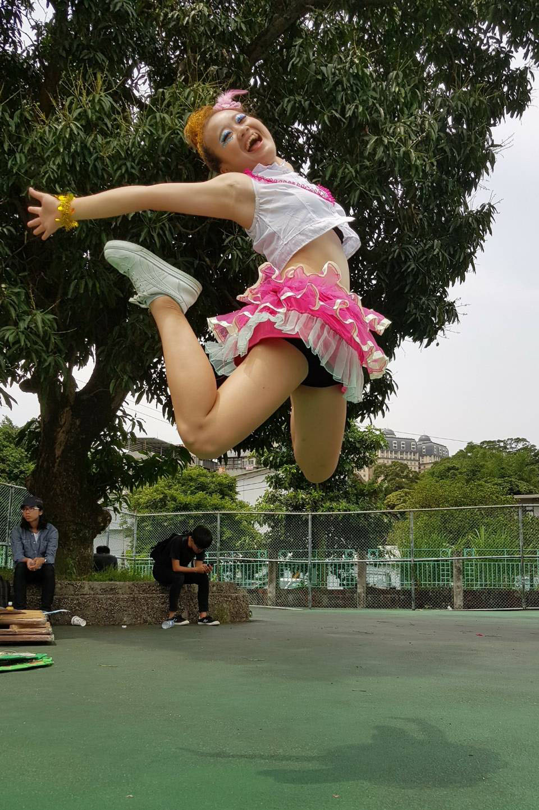
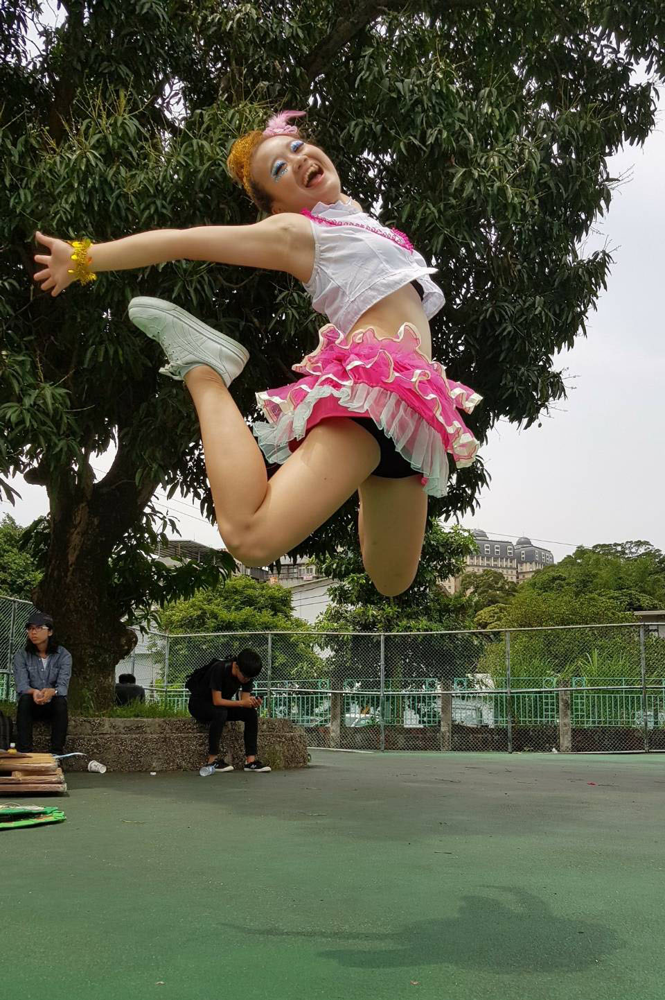

陳怡馨 YI-HSIN,CHEN
Minzu Rd., Xindian Dist., New Taipei City 231, Taiwan (R.O.C.)
0920-055-844 city231317419@gmail.com
目前就讀於世新大學資訊傳播學系，會使用Adobe Photoshop、Premiere、Illustrator等等照片、影片編輯、排版軟體。除此之外，也正在學習如何撰寫程式語言，如:R語言、HTML、CSS等等。除了目前學校主修之專業，我也很喜歡音樂，是一名鼓手，從國中開始組團，高中參加熱音社，擔任文書及鼓組教學，有豐富的表演經驗，也曾創作過高中畢業歌。
I am enrolled in deaprtment of Informantion and communications at Shih-Hsin University.I can use Premiere,Photoshop,Illustrator and other software.Besides,I am learning how to write programming language,which like RStudio,HTML,CSS and so on.Additionally,I also like music.I am a drummer in a bang,which I play music since junior high period.I entered Rock Music Club when I am in senior high school,which I am secretary and drum teacher in the club.I have a lot of performance experience,also created a high school graduation song.
生活 Life


 

精彩回顧 Review
夢想 Dream
- 當一個演員 Be an actress
- 電影、電視劇編劇 Be a screenwriter
- 與志同道合朋友組團、玩音樂 Play music with friends
- 創作自己的音樂 Make my own music
- 打工度假 Working Holiday
- 極限運動(高空彈跳、跳傘等等) Extreme sport
- 一個人的旅遊 Travel alone
經驗 Experience
文書 Secretary
處理社團中大小活動會議統整，紀錄社團社課及校外活動繁雜瑣事，協助社內各組。
To deal with the organization of large and small event meetings, to record the social classes and extracurricular activities, and assist the various groups in the club.
鼓教 Drum Teacher
教導學弟妹爵士鼓基本打鼓姿勢、基礎節奏，解答他們對於爵士鼓的種種疑惑，協助他們進入熱音的世界。
Teach the Jazz drums basic drum posture, base rhythm, answer their questions about the jazz drums, help them into the world of rock music.
服務生 Waitress
裝飾甜點、蛋糕，清點庫存，製作咖啡、飲品，維持店內清潔，協助客人結帳、點餐。
Decorate desserts and cakes, inventory, make coffee and drinks, keep the shop clean, assist guests to checkout and order meals.
鼓手 Drummer
國中時期組的一個女生樂團，擔任鼓手及團長。負責作詞、編鼓，同時協調、整合團內事宜。
A female band in the junior high period, being a drummer and leader. Be responsible for the lyrics and the drum, at the same time coordinate and integrate matters within the band.
學歷Education
Aug. 2017 ~ Jun. 2021
世新大學(就讀中)Shih-Hsin University
Aug. 2014 ~ Jun. 2017
新店高中Hsin-Tien Senior High
技能 Skills
- Drum
- Guitar
- Dance
- Sing
興趣 Interests
我有很多的興趣，平常喜歡聽聽音樂，華語、韓文、日文、歐美等等皆有涉略。因為喜歡音樂，自己也投入到創作行列，開始學樂器、寫歌，喜歡彈吉他、打鼓、唱歌。除了音樂，我也喜歡看電影、韓劇等影視作品，觀賞的同時也在學習。除此之外，我也對極限運動，如:跳傘、高空彈跳等有興趣，雖然一直沒有機會嘗試，但希望有一天能夠挑戰。
I have a lot of interests. I usually like to listen to music,include Chinese, Korean, Japanese, Europe and the United States music and so on are involved slightly. Because I like music, I started writing and began to learn instruments.I like playing the guitar, drums and singing. In addition to music, I also like to watch movies, Korean dramas and other film and television program.While I watching those video,I also studying. In addition, I am also interested in extreme sports, such as skydiving, bungee jumping and so on, although there has been no chance to try, but I hope one day to be able to challenge.
作品works
| 作品名稱 | 類型 | 發表日期(Y/M/D) | 備註 |
|---|---|---|---|
| 世新大學2018 資傳系啦啦隊比賽 | Dance | 2018/05/05 | 世新大學2018校慶運動會 |
| I Want to be... | Video | 2018/03/09 | 傳播技能課程(傳管)作業 |
| 數位化生活 i-Slave | Video | 2017/10/25 | 電腦與網路概論作業 |
| 新店高中二十三屆畢業歌候選 【三年】《預告版》 | Video | 2017/04/19 | 新北市立新店高級中學候選畢業歌預告版MV，擔任導演、製片 |
| 新店高中第23屆畢業歌候選_ 「三年」 | Music | 2017/04/14 | 新北市立新店高級中學畢業歌候選，負責編鼓、影片製作 |
| 作品名稱 | 類型 | 發表日期(Y/M/D) | 備註 |
|---|---|---|---|
| Scandal Baby Cover | Music | 2016/08/14 | 鶯歌音研大成 《極度重鶯》，擔任鼓手 |
| 聽見下雨的聲音Cover | Music | 2016/07/06 | 新北市立新店高級中學熱門樂器社大型成果發表會成果發表會，擔任鼓手 |
| 花Cover | Music | 2016/07/06 | 新北市立新店高級中學熱門樂器社大型成果發表會成果發表會，擔任吉他手 |
| 在你和天空之間Cover | Music | 2016/07/06 | 新北市立新店高級中學熱門樂器社大型成果發表會成果發表會，擔任鼓手 |
| Want you back Cover | Music | 2016/07/06 | 新北市立新店高級中學熱門樂器社大型成果發表會成果發表會，擔任鼓手 |
| My heart Cover | Music | 2016/07/06 | 新北市立新店高級中學熱門樂器社大型成果發表會成果發表會，擔任鼓手 |
| Don't stop believin' Cover | Music | 2016/07/06 | 新北市立新店高級中學熱門樂器社大型成果發表會成果發表會，擔任鼓手 |
| 馬戲團公約Cover | Music | 2016/07/06 | 傾聽青年之聲(展演)，擔任主唱 |
| しぇからしか Cover | Music | 2016/04/23 | 鶯花樹上的的松鼠(鶯歌、樹林、松農聯合展演)，擔任鼓手 |
| One Night Carnival Cover | Music | 2016/04/23 | 鶯花樹上的的松鼠(鶯歌、樹林、松農聯合展演)，擔任鼓手 |
| Crush crush crush Cover | Music | 2015/10/31 | 安新沉睡的鶯林(四校迎新)，擔任鼓手 |
| 小幸運 Cover | Music | 2015/10/31 | 安新沉睡的鶯林(四校迎新)，擔任鼓手 |
| Shunkan Sentimental Cover | Music | 2015/10/31 | 安新沉睡的鶯林(四校迎新)，擔任鼓手 |